Use Case
A lot of insights can be extracted from the past data. These insights can be used to improve the customer satisfaction, make the supply chain better, increase the profits/margins for a company etc.
Harvard Dataverse provides Airline on time data (US region) from 1987 to 2007 (21 years worth of data) for us to download and get interesting insights out of it. Day by day the number of flights is increasing, so 1987 data is smaller than the 2007 data. For the analytics we should be able to download the initial years data to make sure it falls under the AWS free tier.
AWS provides a bunch of Serverless services (Lambda, Fargate, SQS, SNS, Athena etc) where we don’t need to think about the servers, we simply need to use the services and forget about the underlying infrastructure. AWS will automatically provision the resources as the demand increase and delete them based on the demand. This way, we should be able to focus less on the infrastructure and more on the application development.
In this use case we would be doing the basic analytics on the Airline data to figure out some of the best and worst airports using Athena using the delayed flight metrics and do visualizations using QuickSight BI tool. For this we need to download the data from Dataverse onto out Laptop and upload it back to S3 for further analysis.
We should be able to do much more complex analytics using Machine Learning (AWS Sagemaker) to predict if a flight would be getting delayed based on certain weather conditions and time of day, but this is for some other use case.
Athena doesn’t fall under the AWS free tier, so lesser the data in S3 for it to process, lower the bill. Also, QuickSight is provided as a trial version and is free for 2 months from the time we start using this particular service, when the AWS account has been created has no bearing on it. As long as we store less than 5GB data in S3, we should be good. We need to keep these into considerations for the pricing of this use case.
Along the way, we will also change the format of the data from CSV to Columnar (Parquet with Snappy compression). With this conversion the size of the data becomes 1/10th and so we need to pay less as Athena needs to scan less data in S3 and the queries are also executed a bit faster with Columnar format than CSV.
AWS Services: S3, Athena and QuickSight.
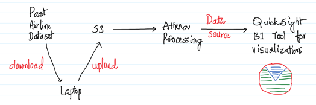
-- Download the data from the below URL for a few years on to the local machine. Uncompress the same and upload the same in S3. Make sure to create a new bucket and a folder called input where the files would be uploaded.
https://dataverse.harvard.edu/dataset.xhtml?persistentId=doi:10.7910/DVN/HG7NV7
Make sure the upload of the files is within the 5 GB limit to make it fall under the AWS free tier.
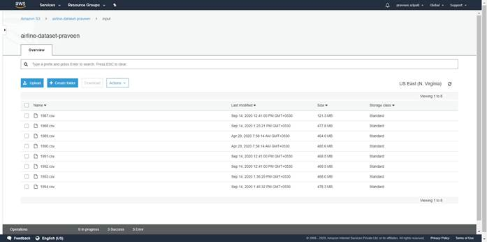
-- Here 3.4 GB worth of airline data spanning across eight years has been uploaded to S3.
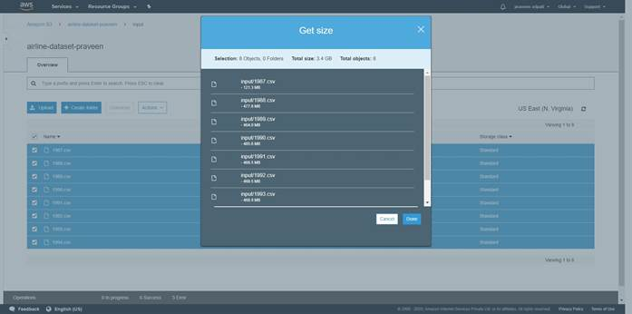
-- Go the Athena Management Console and execute the below DDL command to create on “ontime” table and map it to the data in S3. For this we need to copy/paste the DDL in the console and click on “Run query”. A table would be created and the same would be reflected in the left pane of the Athena Management console.
Make sure the bucket name reflects the one created in the previous step in the DDL.
create external table ontime (
Year INT,
Month INT,
DayofMonth INT,
DayOfWeek INT,
DepTime INT,
CRSDepTime INT,
ArrTime INT,
CRSArrTime INT,
UniqueCarrier STRING,
FlightNum INT,
TailNum STRING,
ActualElapsedTime INT,
CRSElapsedTime INT,
AirTime INT,
ArrDelay INT,
DepDelay INT,
Origin STRING,
Dest STRING,
Distance INT,
TaxiIn INT,
TaxiOut INT,
Cancelled INT,
CancellationCode STRING,
Diverted STRING,
CarrierDelay INT,
WeatherDelay INT,
NASDelay INT,
SecurityDelay INT,
LateAircraftDelay INT
) ROW FORMAT DELIMITED FIELDS TERMINATED BY ',' LOCATION 's3://airline-dataset-praveen/input/';
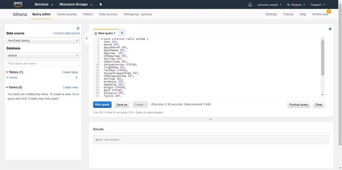
-- As mentioned above, execute the below query to get the number of flights delayed for each of the Origin airport. As highlighted in the below screenshot, Athena has to scan 3.35 GB of data and it took 3.75s to process the data.
select Origin, count(*) from ontime where DepTime > CRSDepTime group by Origin;
CSV data is not really efficient for analytics. In the next steps, we will be converting CSV into Columnar data. This will shrink the size of the Airline data by almost 1/10th. We need pay less for S3 storage. The same is the case with Athena also, as it has to scan less data from S3. The pricing for Athena depends on the amount of data it scans from S3.
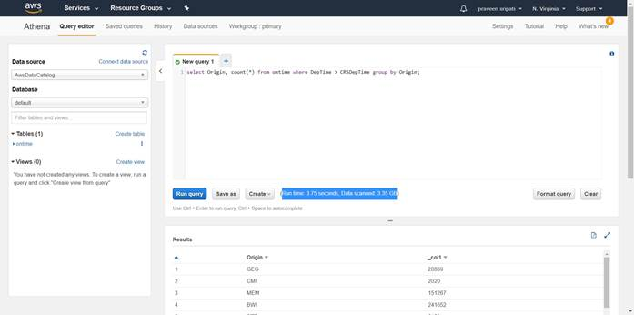
-- Execute the below query to convert the CSV data into Columnar format (PARQUET format with SNAPPY compression). Again, make sure to change the bucket name to the one created earlier before executing the query. Wait for the query to be executed successfully, it takes a few seconds. This query will also create a ontime_parquet_snappy table and map it to the columnar data in S3.
CREATE TABLE ontime_parquet_snappy
WITH (
format = 'PARQUET',
parquet_compression = 'SNAPPY',
external_location = 's3://airline-dataset-praveen/athena-export-to-parquet'
) AS SELECT * FROM ontime;
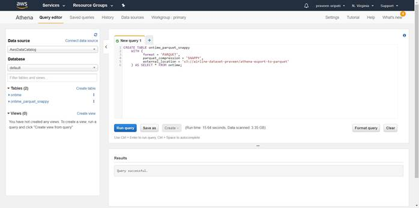
-- In the S3 bucket under the athena-export-to-parquet folder, we should observe the airline data in columnar format. It’s binary data, so downloading/opening the files is not of much use.
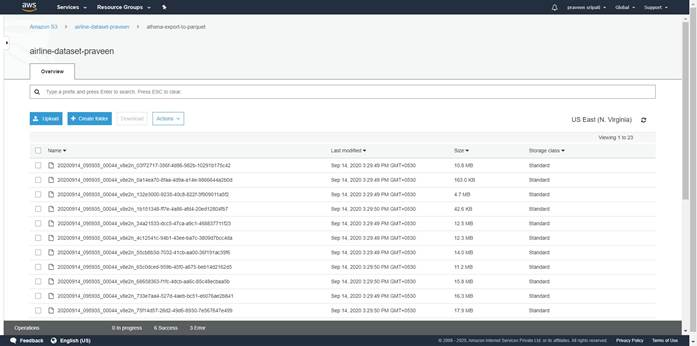
-- Notice that the size of the data in the Columnar format was reduced to 271 MB from 3.4 GB. This is a significant reduction in the size of the data and the queries will also be cheaper and faster on this data.
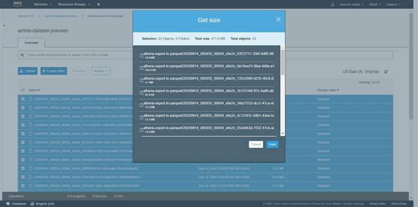
-- Execute the below query to get the delated flights count from each of the origin from the columnar data. Note that the query run a bit fast and the data scanned was also significantly less when compared to the same query on the CSV data.
select Origin, count(*) from ontime_parquet_snappy where DepTime > CRSDepTime group by Origin;
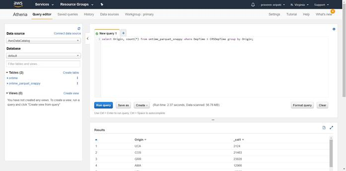
-- Create an origin_delays_total_view view on the ontime_parquet_snappy table. This view has the information about the total delayed flights for each of the origin across all the years.
CREATE VIEW origin_delays_total_view AS
select Origin, count(*) as Delay from ontime_parquet_snappy where DepTime >
CRSDepTime group by Origin;
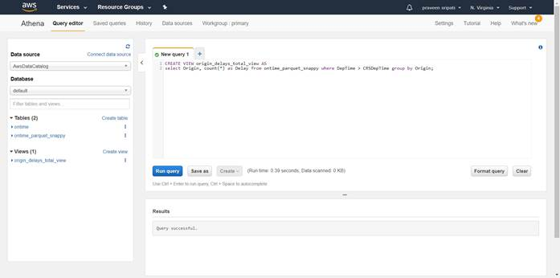
-- Create an origin_delays_by_year_view view on the ontime_parquet_snappy table. This view has the information about the total delayed flights for each of the origin for each of the year separately. We will be using this and the previous view for doing visualizations in QuickSight.
CREATE VIEW origin_delays_by_year_view AS
select Origin, Year, count(*) as Delay from ontime_parquet_snappy where DepTime
> CRSDepTime group by Origin, Year order by Origin, Year;
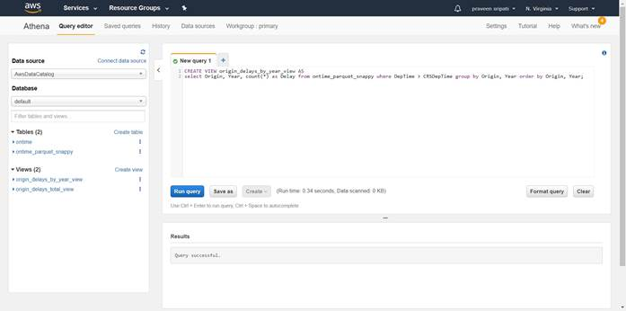
-- Navigate to the QuickSight Management Console. Click on “Sign up for QuickSight”. Btw, QuickSight is free for two months from the time we start using it. When we created the AWS account is not taken into account.
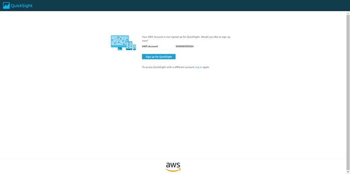
-- Select “Enterprise” and click on “Continue”.
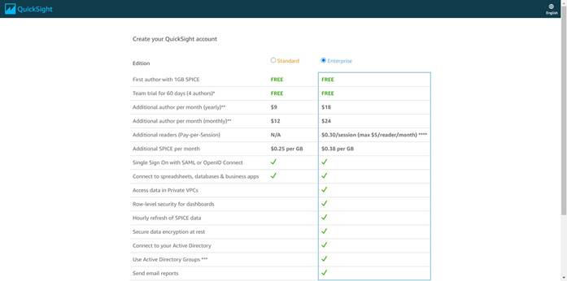
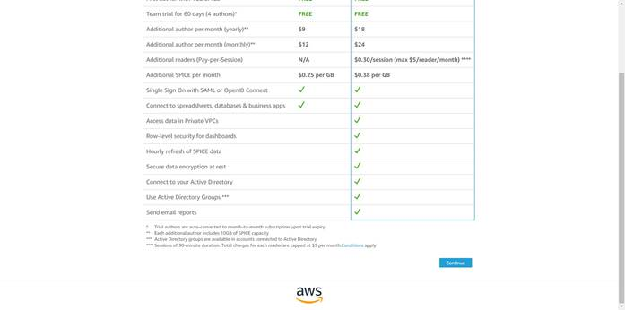
-- Enter the account name and notification email address.

-- For the permissions make sure only Amazon Athena and Amazon S3 are selected.
QuickSight would be able to access both of them.
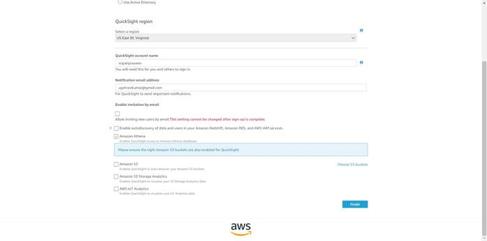
-- A new pop up will appear, select the S3 bucket created in the previous step. Click on Finish.
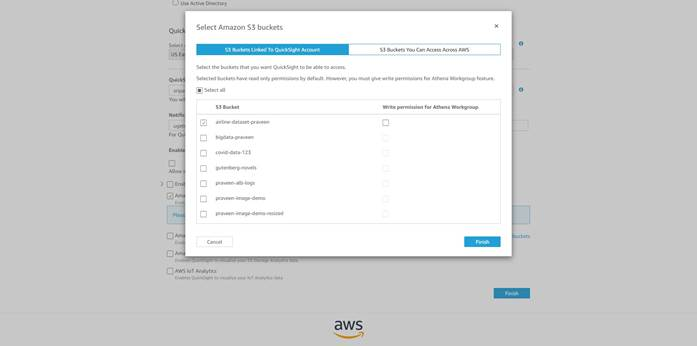
-- Click on Finish.
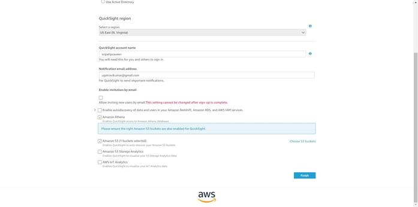
-- Click on “Go to Amazon QuickSight”.
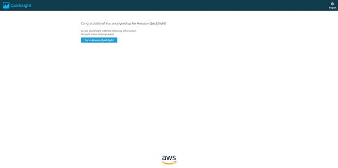
-- Close the Welcome screen.
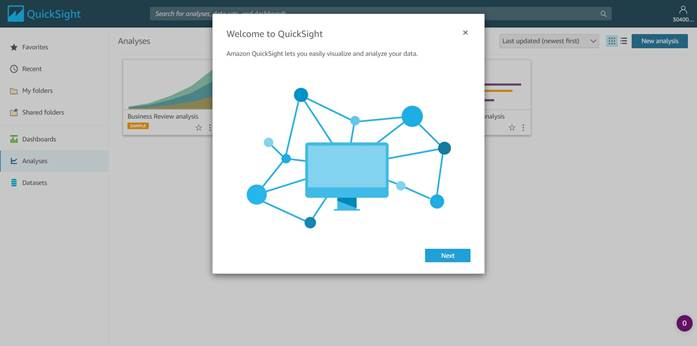
-- Select the Datasets tab in the left pane. Click on “New dataset”.
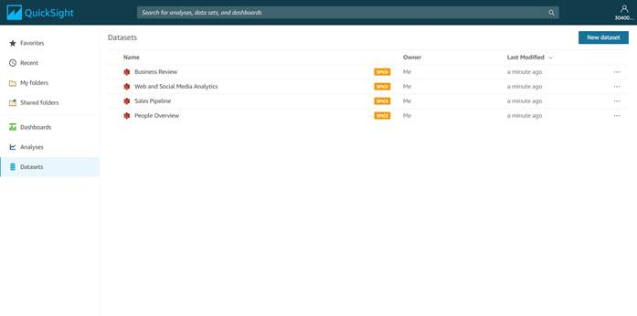
-- Select Athena as the Data Source.
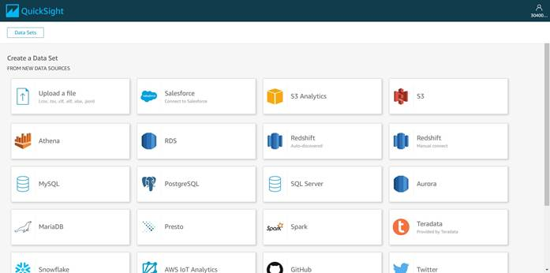
-- Enter the data source name as “FD_1”. Click on “Validate connection” to check if QuickSight has access to Athena. Click on “Create data source”.
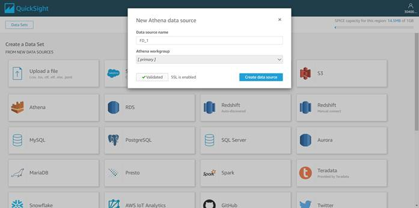
-- Select “origin_delays_by_year_view” and click on Select.
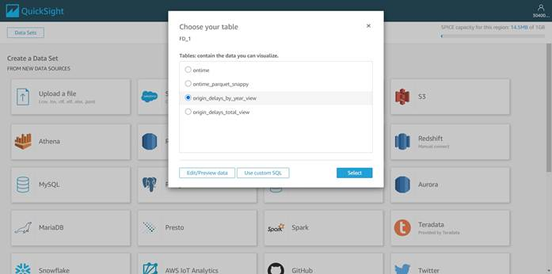
-- Go with all the default options and click on Visualize. Here we are using SPICE (Super-fast, Parallel, In-memory Calculation Engine) to speed up visualizations.
-- Notice that fields delay, origin and year get populated from the view.
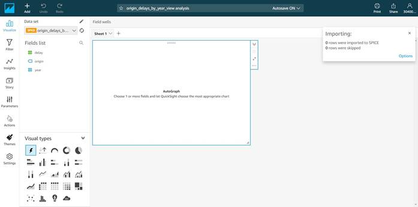
-- In the Visual types select the “Line chart” as shown below.
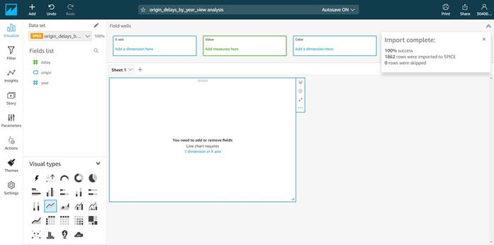
-- We want to filter the data for ORD origin airport and plot a chart for the same. Click on origin field and click “Add filter for this field”.
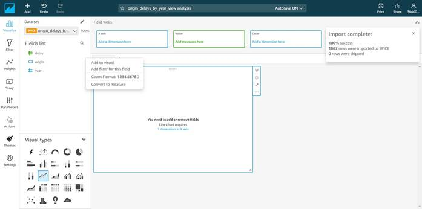
-- Click on “Include – all” under the origin field.
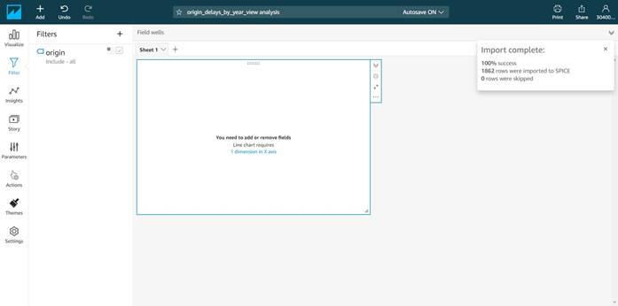
-- Under the “Show selected values” enter ORD and select ORD from the list as shown below. Click on Apply. As mentioned earlier, we are filtering for the ORD origin airport and plot a chart for it.
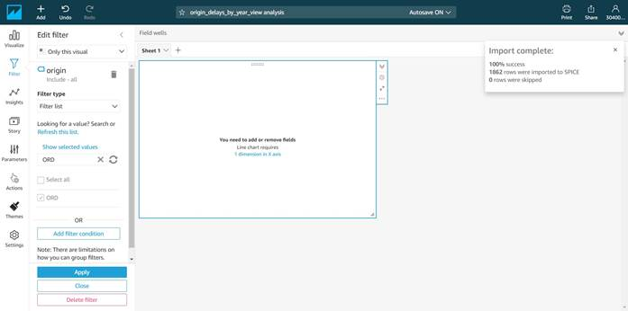
-- Drag the “year” field to the “X axis” and the “delay” field to the “Value”. Notice that the chart gets automatically populated as shown below with the year on the x-axis and the delays on the y-axis. Note that the year on the x-axis is not sorted.
-- Click on the year on the “X axis” and make sure the year is sorted in the ascending order as shown below.
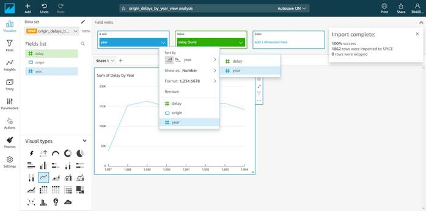
-- Notice that the year in the x-axis in the ascending order. Over the years the delayed flights for the ORD (O’Hare) airport is fairly constant, inspite of the number of flights increasing with time. So, ORD (O’Hare) airport had been doing a good job over years.
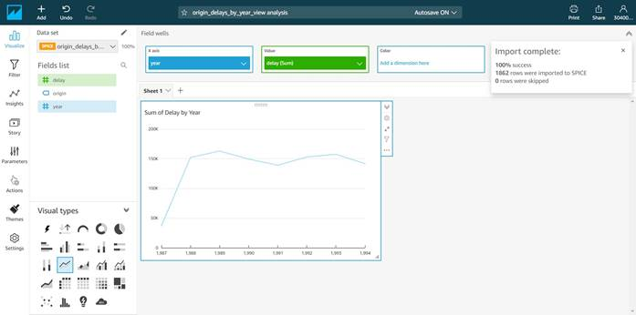
-- Now let’s plot another chart. Click on QuickSight icon on the top left and navigate to the Datasets tab. Click on “New dataset”.
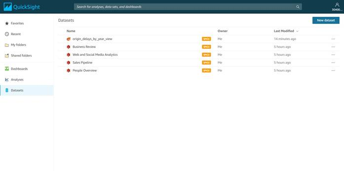
-- Select Athena as the data source.
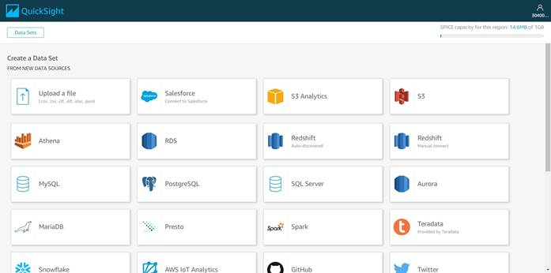
-- Enter the “Data source name” as “FD_2” and click on “Create data source”.

-- Select “origin_delays_total_view” from the list and click on “Select”.
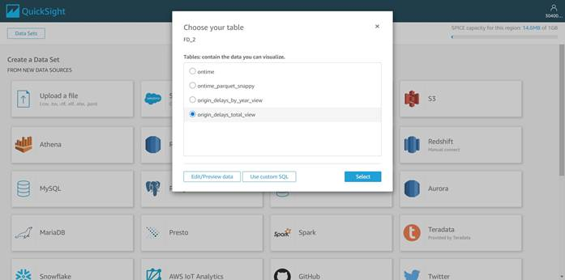
-- Click on Visualize.
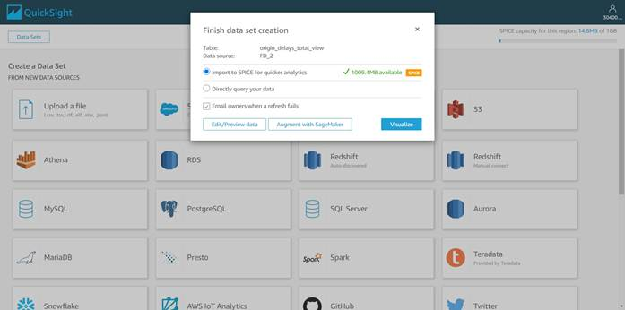
-- The delay and the origin fields will be displayed from the corresponding view.
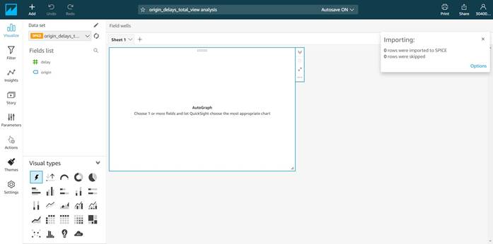
-- Select the Line chart from the Visual types.
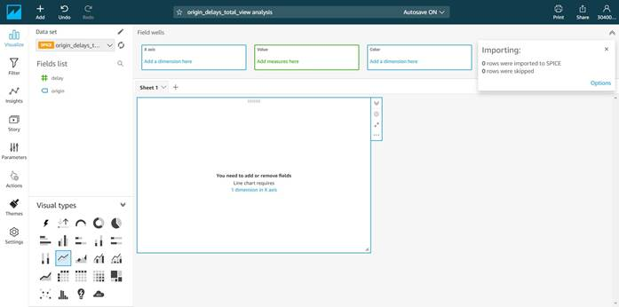
-- Drag the origin field to the “X axis” and the delay field to the Value. Just beside the chart we have a maximize button. Click on the button.
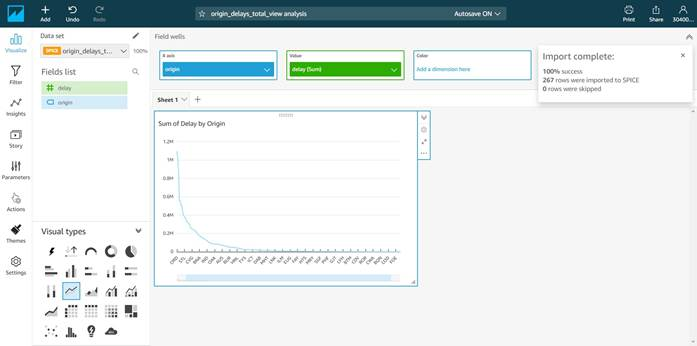
-- We have the same chart expanded. Here we can get the total flights delayed across eight years’ worth of airline data. We have the worst origin airports to the left and the best towards the right based on the number of flights getting delayed.

To conclude, we have seen how to get the airline data set into S3 and do the analytics using Athena and finally do the visualization using QuickSight. All these services follow the serverless model and we don’t need to worry about the underlying infrastructure, simply we need to use the service.
Also, we noticed that the data shrank by 1/10th after converting the data from the CSV to the Columnar (PARQUET/SNAPPY) format. This way we should be able to save more data in the memory and so the analytics will run faster. Also, because the size of the data set is small, we need to pay less for S3 and the Athena costs.